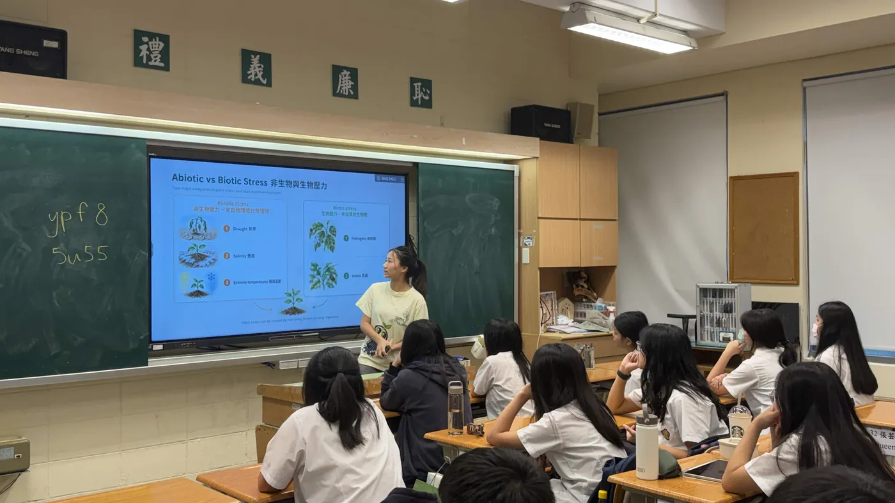

Overview
ReLeaf began as a way to help farmers handle climate stress. The further the project went, the clearer it became that the stress itself was only one part of the problem. Who can afford a response, who understands what that response does, and what the response costs the soil it sits in are all part of the same question, and none of them is a question about plant biology.
That is where the Sustainable Development Goals came in. The 2030 Agenda, agreed by the United Nations in 2015, sets seventeen goals and 169 targets to be met by 2030 [1]. We used them as a checklist against our own design, and we used them in both directions: to find the goals our work genuinely advances, and to find the places where it pulls against one.
Sustainability, for this team, is not only environmental. It also covers whether a society can keep the knowledge it has built, and whether the people who grow food can stay in the work. Three of the four goals below are about people, and only one is about chemistry.
Protectants that keep a stressed crop yielding, produced on the farm that uses them.
Rescue not shown 10 Reduced inequalitiesA social enterprise model that cross-subsidises small growers from industrial sales.
Untested 4 Quality educationFive schools, a rebuilt lesson, a public forum, and a resource site teachers can book from.
Measured 15 Life on landThe chemical load a ReLeaf cycle displaces, and what leaves a running reactor.
Not evidenced

How we chose the goals
Seventeen goals is more than a first-year team can address honestly. Before writing anything we set two rules for what could go on this page.
A goal is claimed only if we can point at something we built, measured or changed. An intention is not an impact, and a page of intentions would be worth nothing to a judge and less to a farmer.
Every goal then answers the same three questions in the same order. What is the problem, stated in the terms the goal itself uses? What does ReLeaf actually do about it? And what is our evidence that the second thing addresses the first? Where the answer to the third question is not yet, the section says so and keeps the goal, because a goal we are working towards without evidence is still worth declaring as long as it is labelled.
We also argue at target level. Goal 2 is zero hunger
, which no agricultural input achieves; target 2.4, on resilient agricultural practices that strengthen capacity for adaptation to climate and other disasters, is a claim a protectant can be measured against. Each section below names its targets before it argues.
One consequence of these rules is that the page is uneven. SDG 4 carries pre-and-post survey data from five schools. SDG 2 carries a validated assay and a quantified stress response with no protectant rescue behind it yet. SDG 10 carries a business model and no deployment at all. SDG 15 carries an argument and no measurement. That unevenness is the real shape of the project, and flattening it would have meant writing four sections of the same confident paragraph.
The goals we considered and dropped are in section 7. Climate action is the one worth naming here: a device that helps a plant survive warming does not slow the warming, and we have no figure for what a ReLeaf deployment would do to emissions in either direction.
SDG 2 · Zero hunger
2.3 double the agricultural productivity and incomes of small-scale food producers. 2.4 resilient agricultural practices that increase productivity and strengthen capacity for adaptation to climate change and other disasters [2].
The problem
Hunger has many causes and distribution is the largest of them. Production is one of the others, and it is the one a plant-science project can reach. Agricultural yield is falling under climate stress and pollution while the population it feeds keeps growing, and the squeeze is sharpest on farming families who both sell their crop and eat it. A bad season forces those households to choose between income and food.
Early in the project we spoke with the leader of Ubuntu Social Enterprise Ghana (USE-GH), the organisation that inspired our first project pitch. What we took from that conversation was that climate is already damaging crops on generational farmland, and that it is getting harder to keep farming land a family has held for decades.
What ReLeaf does about it
Our protectants are meant to keep a plant productive while it is under abiotic stress, so that a stressed crop spends less of itself on survival and more of itself on yield. The bioreactor makes those protectants on the farm that uses them, which takes out both the transport and the standing chemical load of a bought input, and gives the soil room to recover from that load between seasons. How one would be owned, priced and delivered is on the Entrepreneurship page.
What the evidence supports
The plant screen supports part of this and not yet all of it. What it establishes is the assay: Arabidopsis thaliana on plates, a salt dose we can set deliberately, and readouts that move with it. The clean ladder of 3 August measured root length at day six across four salt levels, and the response is unambiguous. The raw sheet turned out to hold all nine seedlings of every group, so the figures below are means and not the single readings this page carried until 23 September. The 150 mM value moved with that: the summary it came from dropped the two seedlings that died. The Plants page keeps the arithmetic.
That is a dose response, and it is what an assay has to have before a protectant can be judged on it. A protectant is only visible in the gap between a stressed plant and a rescued one, so the stress has to be real, repeatable and short of lethal first. At 250 mM the seedlings bleached white by day three, which is not a stress level any treatment could be read against. The screen now runs at 75 and 100 mM.


What the screen has not shown is rescue. Trehalose, the reference protectant we ran first, moved those numbers by a few millimetres in either direction across six experiment sets and was dropped as a positive control in August. AtLEA14 exists as the construct Csn:Lea and has not yet reached a plant. BoPep4 does not appear in the plant record at all. Until one of the three moves a readout against its own stressed control, the yield argument above is a design intention with a working test bed behind it, and we say so here instead of converting an assay into a harvest.
Long-term impact
Scaled up, an on-farm reactor changes what a smallholding has to buy in. The protectant is made where it is used, so the freight, the packaging and the standing inventory go, and the chemical load on the field falls with them. Land that carries less of that load recovers, which helps the next crop and the crop in the field next door.
We are not trying to solve world hunger. It is not a problem a bioreactor solves, and a page that claimed otherwise would be easy to dismiss. The narrower aim is to take some financial pressure off farming families and to put a steadier food supply within reach of the households that grow it.
- A salt-stress assay in Arabidopsis that produces a clean, repeatable dose response, with the working window set at 75 to 100 mM NaCl.
- A production route that removes freight and standing chemical load from the input a farmer applies.
- A stated design target under SDG 2.4: adaptation capacity, at the seedling stage, on abiotic stress.
- Any yield increase. No protectant has moved a readout against its stressed control.
- Any transfer from Arabidopsis to a food crop. The relation to mustard-family crops is an argument, not a result.
- A figure for income or food security at household level. Nothing has been deployed on a working farm.
SDG 10 · Reduced inequalities
10.1 sustain income growth of the bottom 40 per cent of the population at a rate above the national average. 10.2 empower and promote the economic inclusion of all, irrespective of status [2].
The problem
Industrial farms have the capital, the contiguous land and the technical staff to take on new hardware. Small growers usually have none of the three, and they have less room to absorb a failure: a reactor that does not work on a one-hectare holding costs a far larger share of that year's income than the same failure on a hundred-hectare one. Reservations about putting an untried product on limited ground are rational, not conservative.
Taiwanese farmland is made of exactly those holdings. Our own geospatial layer of rural regeneration communities splits at 1.1 hectares, the national average holding, and only three communities in the entire layer sit above it. The people working that land are not young: average farmer age by county ran between 55 and 61 years in 2016, against station warming measured from 1999 to 2020.


What ReLeaf does about it
ReLeaf is planned as a social enterprise, which is a business that sets out to support a group without giving up on profit, and so is able to keep operating without the fundraising an NGO depends on. Revenue from industrial farms and from data sold to agricultural researchers cross-subsidises small growers' purchases. Unions and cooperatives can rent a reactor instead of buying one, which turns the barrier from a capital decision into an operating cost. Initial installation is currently estimated at NT$100,000 to 150,000, with tiered pricing and subsidy on top of it.
We took the model from USE-GH. Ghanaian farmers selling through middlemen keep little of what their crop is worth, so USE-GH buys from them directly and teaches them to process raw material into a finished product. More of the value stays with the grower. We are applying the same logic to a piece of hardware: the people who can pay for it are not the people the project is for, and the model has to carry that gap on purpose. The full canvas, the payer segments and the stakeholder map are on the Entrepreneurship page.
Who we actually have to reach
There is a complication in our own numbers. Only 3.47 per cent of Taiwan's farmland was organic or eco-friendly by 2024, and globally 2.1 per cent of agricultural land was managed organically in 2023 [3, 4]. Over 97 per cent of farmers worldwide are conventional. The growers most sympathetic to a biological input are a small minority of the market, and the growers who most need a cheaper input are largely the ones committed to chemical ones. A product for smallholders that only appeals to organic smallholders is a product for a rounding error, so conventional farmers are the audience the design has to satisfy, not the audience it converts.
- A business model chosen for distributional reasons, with the cross-subsidy and the rental route written into it from the start.
- Mapped evidence that Taiwanese farmland is smallholder land, and that the people on it are ageing into the warming.
- A named precedent, USE-GH, and a stated reason for copying its structure.
- Any income effect. Nothing has been sold, rented or subsidised.
- That the price is affordable. It has not been tested with the growers it is set for.
- That cross-subsidy closes at this volume. There is no model of how many industrial sales one subsidised unit needs.
SDG 4 · Quality education
4.7 ensure all learners acquire the knowledge and skills needed to promote sustainable development. 4.4 increase the number of people with relevant skills [2].
The problem
Most people meet synthetic biology through a headline. The resources that would let them form their own view are scattered, and much of the vocabulary only exists in English, which in Taiwan puts a language barrier in front of a scientific one. Without a way in, people end up reacting to engineered products out of a misconception and not out of a judgement, and that cuts both ways: a technology gets rejected for the wrong reason, or accepted for one.
What ReLeaf does about it
We taught in five schools across three age groups and rebuilt the lesson four times as the surveys came back. Every slide was bilingual. We also built an education website that gathers this year's materials and previous years' into one place with an introduction to synthetic biology in front of them, and teachers can book a class through it without having to track us down. On 5 September we ran a public forum where we explained the project and the biology behind it to an audience of farmers, students and the general public. The programmes, the lesson files and what students made us change are on the Education page.


What the evidence supports
This is the one goal on the page where we hold before-and-after measurements. Every student answered the same seven-question benchmark immediately before the lesson and immediately after it.

The two questions that moved furthest are the two the project itself turns on. Telling biotic stress from abiotic stress went from 16 to 91 per cent correct, and reading DNA codons from 25 to 89 per cent. The purpose of photosynthesis went from 18 to 82 per cent. Where a question started high it stayed high and moved little: the inputs to photosynthesis were already at 81 per cent before we taught anything and finished at 93 per cent, which is a ceiling and not a failure.
Two limits belong with those numbers. The chart pools four trials, and the trial-by-trial split on the Education page is not uniformly upward: the photosynthesis question dipped in trial 2 before recovering in trial 3, which is how we found the part of the lesson that was not working. And both surveys were taken on the day, so the figures measure what a lesson landed and not what a student still knows a term later. We have no retention data and no control group.
- Measured knowledge gain on a seven-item benchmark across four elementary trials, pre against post.
- A lesson revised four times against its own survey results, with the revisions documented.
- A public resource site and a booking route that outlive the team's own visits.
- Retention. Both surveys were taken on the day of the lesson.
- Attribution. There was no control group, so the gain is the lesson plus everything else that day.
- Reach beyond the schools we visited. Website traffic has not been reported.
SDG 15 · Life on land
15.3 combat desertification, restore degraded land and soil. 15.5 reduce the degradation of natural habitats and halt the loss of biodiversity [2].
This section is unfinished, and it is on the page unfinished because leaving it off would misrepresent how far the project got. The argument is clear and the evidence for it does not exist.
Life on land is the goal ReLeaf touches through what it displaces. A protectant made on the farm and applied only when stress is forecast is meant to stand in for a broadcast chemical input applied on a schedule, and the entire SDG 15 case rests on that substitution lowering the load a field carries. Less product, applied less often, reaching fewer things that were not the target.
Two measurements would close the gap and we have taken neither.
The first is a number for what a ReLeaf cycle actually displaces. We have no figure for how much conventional input a farm would stop applying, over what area, across a season. Without it the substitution is an assertion, and an assertion about chemical load is exactly the kind a regulator and a farmer will both want a number for.
The second is containment. Our production organism is an engineered Bacillus subtilis, and the output that reaches the plant is cell free by design, but we have no data on what leaves a running reactor into the soil around it. The Laws and Regulations page found that all three markets we studied treat the engineered culture as a biosafety question in its own right, separate from the output. SDG 15 is where that question has to be answered with a measurement rather than with a classification, and a plate count on soil taken beside a running reactor would be the place to start.
- A stated mechanism: on-farm, forecast-triggered dosing displaces scheduled broadcast application.
- A design decision that follows from it, periodic operation, which is argued in section 7.
- Any reduction in chemical load. No displacement figure exists.
- Any statement about what reaches the soil around a reactor. No containment measurement has been taken.
- Anything at all about biodiversity or habitat, which target 15.5 would require.
Where the project does not help
We want ReLeaf to do as much good as it can, and it is unavoidable that a product has effects on the environment and on the people using it that its designers did not intend. This section is where we record the ones we know about. Nothing here is resolved.
Dependency
The sharpest objection anyone has put to this project came from Ms. Chen Hui-wen, who farms naturally at the Tamsui Happy Farm. We spent 21 July with her, harvesting okra and luffa and being shown what she reads in her soil. She was sceptical on two counts: whether a technology like ours works in a real field at all, and whether it helps even when it does.
“Sometimes giving too much is not good for a living thing. It can take away its ability to survive and thrive on its own.”
Her plants grew as large as they did because she let them survive on their own. The point tells directly against ours. A plant handed a protectant the moment conditions turn has no reason to build its own tolerance, and may cope worse in the season it comes off the product than a plant that was never on it. If that holds, ReLeaf would set back plant resilience at the same time as it protects a harvest, which is a cost against the same goal the rest of this page is arguing for.

Our answer is partial, and it is a design change and not a rebuttal. ReLeaf operates periodically: it acts on forecast stress, at the seedling stage, up to a dose validated on plants, and then it stops. Prof. Huang put the same point to us a week after Ms. Chen did, and three speakers at the September forum arrived at it independently from natural farming, engineering and industry. Protect in proportion to need is now a design rule and not a preference.
Less often is still not never. We have not tested whether a plant grown under periodic protection is more or less tolerant the following season than one grown without it, and that experiment is not in the plan. It is the experiment that would settle whether the objection is a real cost or a manageable one.
Goals we do not claim
Four goals appear on this page. Several others were considered and left off, and the reasons are worth stating because leaving them unstated would look like an oversight.
| Goal | Why it is not claimed |
|---|---|
| SDG 13 · Climate action | A device that helps a plant survive warming does not slow the warming. We have no emissions figure for a ReLeaf deployment in either direction, and adaptation is not mitigation. Claiming this goal is the most common way a project of this shape inflates itself. |
| SDG 6 · Clean water | Lower chemical load should mean less agricultural runoff, but that runs through the same displacement figure SDG 15 is missing. The claim depends on a measurement we have not taken. |
| SDG 12 · Responsible production | On-farm manufacture removes freight and packaging, which is a real supply-chain change. We have not costed it, so there is no number to put against a target. |
| SDG 9 · Industry and infrastructure | Closest to the project's actual argument, access to the means of production, and it overlaps SDG 10 almost entirely on our evidence. We argue it once, under reduced inequalities, instead of twice. |
Stakeholder consultation
None of the claims above were assessed only by us. The people below shaped the sections they sit next to, and the full record of each meeting, with dates and what changed afterwards, is on the Integrated Human Practices page.
| Who | When | What it changed here |
|---|---|---|
| Ubuntu Social Enterprise Ghana (USE-GH) | Early in the project | The origin of the project pitch, the account of climate damage on generational farmland under SDG 2, and the business model copied under SDG 10. See fix S1: this meeting is not yet on the engagement record. |
| Ms. Chen Hui-wen, natural farmer, Tamsui | 21 July 2026 | The dependency objection in section 7, and periodic operation as a design rule. She also told us how hard seed is to find and swap, which became the seed exchange on our LINE account. |
| Prof. Huang | Late July 2026 | Independent agreement on periodic operation, a week after Ms. Chen made the same point from the opposite direction. |
| CH Biotech | 9 July 2026 | The regulatory classification work that SDG 15's containment question depends on, recorded on Laws and Regulations. |
| Public forum, three speakers and the floor | 5 September 2026 | Protect in proportion to need, argued from natural farming, engineering and industry at once. Farmers in the audience tested the affordability case directly. |
| Stallholders, Water Garden Organic Farmers' Market | 5 September 2026 | Interviews on the day of the forum, which is where the gap between organic and conventional growers under SDG 10 came from. |

Long-term impact
A first-year project can describe the mechanism by which it would matter and can show that the mechanism is plausible. It cannot show the effect. What follows is the first of those two, written so that a later team can test it.
The chain runs through four steps, and each one has a page behind it. A protectant that measurably rescues a stressed plant would make a crop's yield less sensitive to a bad season. An on-farm reactor would put that protectant within reach of a holding too small to buy an equivalent input at industrial prices. A social enterprise structure would keep it within reach as the company grows, because the cross-subsidy is in the model rather than in a grant. And the maps on Geospatial Analysis identify where that matters most: the counties where warming and farmer age are both highest, which is where a farm is least likely to be handed on.
Three of those four steps are designed and one is unproven, and it is the first one. Everything downstream of a working protectant is contingent on a working protectant.
What would have to be measured
These are the measurements that would move each section of this page from an argument to a result. They are listed in the order we would take them.
| Measurement | Goal it settles |
|---|---|
| A protectant moving a readout against its own stressed control | SDG 2. Everything else on this page is downstream of it. |
| A displacement figure: conventional input a ReLeaf farm stops applying, per hectare, per season | SDG 15, and SDG 6 and 12 with it. |
| Soil plate counts beside a running reactor | SDG 15, containment. |
| Price and rental terms tested with a cooperative | SDG 10. |
| A retention survey one term after a school visit | SDG 4. |
| Second-season tolerance, protected against unprotected | The dependency objection in section 7. |
Nothing on that list needs equipment we do not have. Four of the six need time we did not have this year, which is the honest reason they are not on this page as results.
References
- United Nations General Assembly. Transforming our world: the 2030 Agenda for Sustainable Development. A/RES/70/1, 25 September 2015.
- United Nations, Department of Economic and Social Affairs. The 17 Goals and their targets. sdgs.un.org/goals. Target wording on this page is abbreviated; the full text is at the link.
- Agriculture and Food Agency, Ministry of Agriculture, Taiwan. Organic and eco-friendly farmland, 2024. afa.gov.tw. The same source the Entrepreneurship page cites as its reference 8.
- Organic agriculture as a share of world agricultural land, 2023. Cited via the ReLeaf business plan. exact source needed